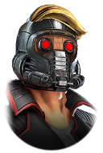
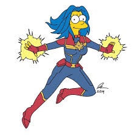

YONATHAN "FURIA" SANCHEZ
"El Nick Fury del Reclutamiento TI"
Reclutador especializado en TI | Conectando superhéroes tecnológicos con sus misiones perfectas
Ver Perfiles de Héroes
"El Nick Fury del Reclutamiento TI"
Reclutador especializado en TI | Conectando superhéroes tecnológicos con sus misiones perfectas
Ver Perfiles de HéroesSoy Yonathan "Furia" Sánchez, el director de S.H.I.E.L.D. Tech Recruitment. Con más de 9 años de experiencia reuniendo a los superhéroes tecnológicos más extraordinarios para formar los Vengadores que tu empresa necesita.
Mi cuartel general se encuentra en el Helicarrier, donde analizo cada perfil tecnológico como si fuera un candidato para unirse a los Vengadores. No solo busco habilidades técnicas, sino el potencial heroico que hay en cada desarrollador.
Mi lema es: "No todos los héroes llevan capa, algunos llevan código en la sangre". Cada día es una misión para encontrar al héroe tecnológico perfecto para salvar el proyecto que lo necesite.
Cada rol en tecnología tiene su equivalente en el universo Marvel. Estos son los héroes que recluto para tus proyectos:
(Iron Man)
Construye el corazón y el cerebro de sus sistemas (J.A.R.V.I.S., F.R.I.D.A.Y.). Su mente lógica y genialidad para la ingeniería se centran en crear la tecnología compleja que hace que todo funcione de manera poderosa y eficiente detrás de escena (el servidor, la lógica de negocio, las bases de datos). No se preocupa tanto por cómo se ve, sino por lo que puede hacer.
Reclutar(Spider-Man)
Es creativo, ágil y tiene un "sentido arácnido" (una gran intuición para la usabilidad). Él es quien interactúa directamente con la ciudad (el usuario) en la primera línea. Se preocupa por cómo la gente experimenta y se mueve por la ciudad (la interfaz), es innovador con sus webs (literalmente) y siempre busca la forma más elegante y eficiente de presentar la acción. Es el encargado de que todo "se vea bien y sea fácil de usar".
Reclutar(Black Panther)
No solo es un guerrero formidable en el campo de batalla (el front-end), sino que también es el rey y científico supremo de Wakanda, con un dominio total de la vibranium y la tecnología más avanzada del planeta (el back-end). Tiene un conocimiento completo y profundo de toda la "pila tecnológica" de su reino, desde la infraestructura hasta la interfaz del usuario final. Es el generalista más poderoso.
Reclutar
(Vision)
Se trata de la unión entre desarrollo y operaciones, de automatización y de infraestructura. Vision es literalmente una fusión de tecnología (J.A.R.V.I.S. + la gema de la mente) y un ser vivo. Puede interactuar directamente con la infraestructura digital del mundo, auto-repararse y desplegarse en cualquier entorno. Es el encargado de que el sistema esté siempre online, sea escalable y se ejecute sin problemas.
Reclutar(Shuri)
Es la diseñadora e innovadora. Ella no solo crea tecnología poderosa, sino que se preocupa profundamente por la experiencia del usuario. Diseña trajes que son intuitivos, eficientes y se adaptan al usuario (como el de Pantera Negra), y interfaces holográficas que son a la vez funcionales y visualmente impresionantes. Su trabajo es hacer que la tecnología avanzada sea usable y elegante.
Reclutar
(Doctor Strange)
No escribe todo el código, pero diseña el plan maestro. Doctor Strange, como Hechicero Supremo, comprende el multiverso (el sistema completo) en todas sus dimensiones. Ve todas las posibilidades, anticipa las amenazas (cuellos de botella, puntos de fallo) y diseña los hechizos y planes (patrones de arquitectura) que mantienen toda la realidad (la aplicación) estable, escalable y segura. Él tiene la visión de alto nivel.
ReclutarCon la mente de un inventor y el código como mi material de construcción, forjo mi propio legado en la web. Como Forge visualiza y crea la tecnología del mañana, yo diseño y desarrollo esta página: un dispositivo perfectamente calibrado para mostrar quién soy y conectar con el mundo. Cada línea de HTML estructura mi armadura, cada regla de CSS define su estilo, y cada enlace es un portal a otra parte de mi universo. Este no es solo un portafolio; es mi artefacto personal, mi invención definitiva.

Este formulario no fue construido; fue proyectado directamente en la mente de la web. Como el Profesor Xavier, su propósito es conectar, comunicar y comprender. Cada campo de texto es un pensamiento esperando a ser leído, cada botón de opción una decisión consciente. Utilizo el Box Model no como un arma, sino como los límites de una 'Sala de Peligro' mental, creando el espacio perfecto (padding) y los límites claros (border) para que la interacción fluya sin interferencias. Este es el sueño de accesibilidad hecho realidad: una interfaz telepática que guía a cada usuario, sin importar su habilidad, hacia una comunicación perfecta con el sistema. No estás llenando campos; estás proyectando tus ideas.
¡Bienvenido a bordo! Esta no es una simple landing page, es mi nave, el Milano. Al igual que Star-Lord, he creado una experiencia que te atrapará desde el primer segundo. La sección hero es mi entrada triunfal con el casco y los pistoles, diseñada para que quieras unirte a la misión. La barra de navegación es mi tripulación de inadaptados, lista para llevarte a cualquier rincón de esta galaxia web. Y cada sección principal es una nueva aventura, una historia que contar con un estilo visual que tiene su propia banda sonora (gracias al CSS). Así que ponte los cascos, sube el volumen y disfruta del viaje. Al final, te garantizo que querrás más.
Al igual que la Capitana Marvel se adapta a cualquier batalla en la Tierra o en el espacio más lejano, esta página web está diseñada con un poder responsivo absoluto. Usando la tecnología Flexbox y Media Queries como su traje Kree, la estructura se contrae, expande y reorganiza con la misma elegancia con la que Marge controla el caos de Springfield. Ya sea que visites el sitio desde un teléfono móvil (tan pequeño como Maggie) o desde una pantalla gigante (tan vasta como la ambición del Señor Burns), cada elemento se alineará perfectamente, garantizando que la esencia heroica de Margevel brille en cualquier dispositivo. Porque una heroína cósmica nunca pierde el estilo, sin importar el frente que deba proteger.
¿Necesitas reunir a tus Vengadores tecnológicos? Envía una señal al Helicarrier y coordinaré el equipo perfecto para tu misión.